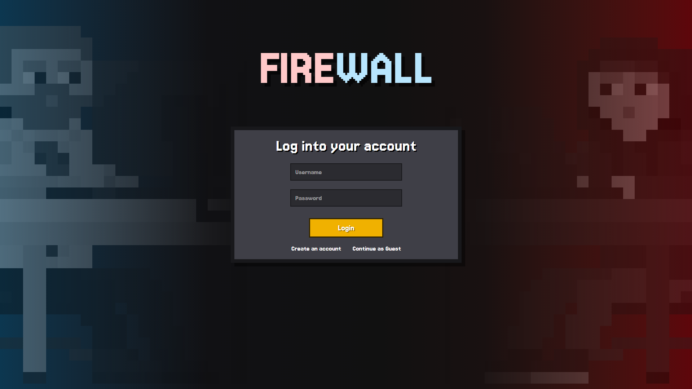
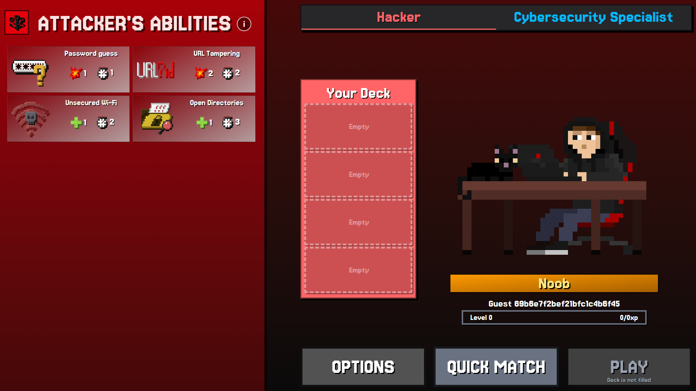
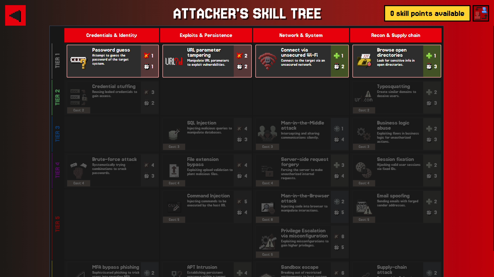
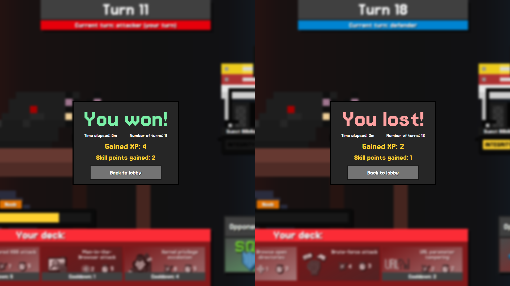

User Guide
Introduction
Game Overview
Firewall is a browser-based multiplayer game built around a turn-based system inspired by cybersecurity concepts. During matches, players choose between two roles: a hacker or a cybersecurity specialist. Each role has its own unique abilities and playstyle.
Key Features
The game includes the following features:
- Quick matches for fast gameplay sessions
- Ranked matches for competitive players
- A ranking system that tracks player performance
- PvP battles against other players
- A player level progression system
- Unique skill trees for each playable role
Requirements
To play the game you need:
- A modern web browser
- An active internet connection
- A screen resolution of 1920×1080 (recommended)
How to Join the Game
You can start playing in two ways:
Playing as a Guest
You can start the game without creating an account by selecting the "Continue as Guest" option. This allows you to try all core gameplay mechanics. However, your progress will not be saved.
This option is recommended for new players who want to try the game before creating an account.
Playing as a Registered User
Creating an account allows you to save your progress. To register, provide a username, email address, and password.
User Interface
This section provides an overview of the user interface. The screenshots below show the hacker role interface. The cybersecurity specialist interface is very similar.

Welcome screen – login formThis screen appears when the game is launched. From here you can log in, create a new account, or select the "Continue as Guest" option to play without registering.

Lobby screenThe lobby is the main hub where players can:
- Select the role they want to play
- Manage their abilities
- Select a deck for each role
- View their rank (displayed below the character image)
- View their level (displayed below the rank and username)
- Start a quick match or a ranked match
- Open the skill tree (top-left corner button)
To join a ranked match, you must first complete your deck configuration.
The logout option is available in the OPTIONS menu.

Skill tree screenThe skill tree allows players to unlock new abilities using skill points earned by leveling up.
Abilities are arranged in a grid consisting of four columns (ability categories) and six rows (ability tiers).
To unlock an ability, click on the desired ability and confirm the purchase. If you have enough skill points, the ability will be unlocked.
- Unavailable abilities appear fully grayed out.
- Available but not yet purchased abilities appear slightly grayed out.
- Purchased abilities are marked with a border.
Click here to learn more about abilities.
 Battle screen
Battle screen
The battle screen is where matches take place.
- Your selected abilities are displayed at the bottom of the screen in your deck.
- Each ability has a cooldown period after being used.
- The cooldown timer is displayed as a gray bar on the ability tile.
- Your character appears on the left side of the screen and the opponent on the right.
- Health bars, usernames, and ranks are displayed below the characters.
- The current turn number and active player are shown at the top center of the screen.
- The Give Up button in the top-left corner allows you to surrender the match.
- The opponent’s last used ability is displayed in the bottom-right corner.
Click here to learn more about gameplay mechanics.

End screenThis screen appears at the end of a match. It displays the match results, including:
- Whether you won or lost the match.
- Total time elapsed during the match.
- Number of turns played.
- Experience points earned.
- Skill points earned.
To return to the lobby, click the "Back to Lobby" button.
Gameplay Mechanics
Game Objective
The objective of the game is to defeat your opponent by reducing their health to zero.
Battle
Each player starts the match with 20 health points. For the hacker role, these points are called PERSISTENCE, while for the cybersecurity specialist role they are called INTEGRITY.
The match always begins with the attacking role — the hacker.
Players take turns performing actions using abilities from the deck they selected earlier.
The match ends when one player's health reaches zero or when a player decides to surrender.
Game Modes
All game modes share the same objective and battle system. The only difference is how the deck is created and whether the match affects the player’s rank.
Quick Match (Unranked)
In this mode, players can quickly find opponents and play matches without affecting their rank.
The deck is created using a draft system. After matchmaking is completed, the player enters a draft phase where their deck is assembled.
During the draft, the player goes through four rounds of choices. In each round, two random abilities are presented, and the player must choose one of them.
The player does not know which abilities will appear in later rounds, so each choice must be made without knowing future options.
In this mode, all abilities are available during the draft, including those that the player has not yet unlocked in the skill tree.
Quick Match is a good mode for experimenting with different abilities, testing new strategies, and learning the game mechanics.
Ranked Match
In this mode, players compete against others to gain experience and improve their rank.
Players enter the match with a deck that was previously configured in the lobby.
The deck consists of four abilities selected from those the player has unlocked in the skill tree.
Abilities
Abilities are actions that your character can perform during battle.
There are three types of ability effects:
- Damage
 – These abilities deal damage to the opponent and reduce their health.
– These abilities deal damage to the opponent and reduce their health. - Healing – These abilities restore your health.
- Freeze
 – These abilities prevent the opponent from performing actions for a number of turns.
– These abilities prevent the opponent from performing actions for a number of turns.
The type of effect is indicated by an icon associated with the ability.
Each ability also has a cooldown period after it is used.
Healing Override
If a healing ability is used while the player's health is already at the maximum value, a special effect is applied instead.
The effect depends on the player's role.
- For the HACKER role, the healing ability grants a damage boost to the next ability that deals damage.
- For the CYBERSECURITY SPECIALIST role, the healing ability grants additional health points, allowing the player to exceed the normal limit of 20 health points.
Skill Tree
The skill tree allows you to unlock new abilities.
Abilities are organized into categories and tiers, which determine their availability and progression within the skill tree.
To unlock an ability, you must spend skill points earned by leveling up.
The following conditions must be met to unlock new abilities:
- The player must have enough available skill points.
- The player must unlock the previous tier of abilities in the same category.
- If no ability is available to unlock in the previous tier of the selected category, the player must first unlock an ability in that tier in a different category.